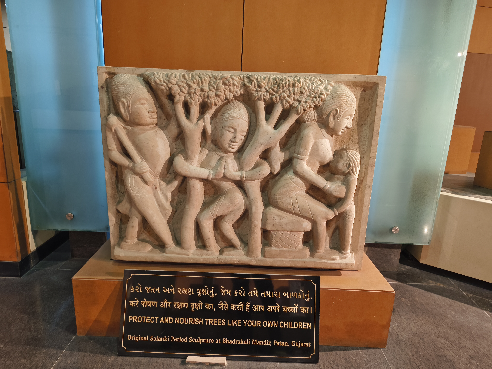

આ સોલંકી કાળ (11મી–13મી સદી)ની પાષાણ શિલ્પકૃતિ પાટણના ભદ્રકાળી મંદિરથી પ્રાપ્ત થયેલી છે. શિલ્પમાં માનવ આકૃતિઓ અને હરિયાળા વૃક્ષો દર્શાવવામાં આવ્યા છે, જે માનવ અને પ્રકૃતિ વચ્ચેના ગાઢ સંબંધનું પ્રતિનિધિત્વ કરે છે.
આ કૃતિનો મુખ્ય સંદેશ વૃક્ષ સંરક્ષણ છે. શિલ્પમાં દર્શાવાયેલ દૃશ્ય સૂચવે છે કે વૃક્ષોનું જતન અને પોષણ પોતાના સંતાનોની જેમ કરવું જોઈએ. હરિયાળા વૃક્ષો જીવન, સમૃદ્ધિ અને પર્યાવરણીય સંતુલનના પ્રતીક છે.
સોલંકી યુગની આ કૃતિ દર્શાવે છે કે પ્રકૃતિ પ્રત્યેનો આદર અને પર્યાવરણનું સંરક્ષણ આપણા સાંસ્કૃતિક વારસાનો મહત્વપૂર્ણ ભાગ રહ્યું છે.
સંદેશ: "વૃક્ષોનું રક્ષણ અને પોષણ તમારા પોતાના બાળકોની જેમ કરો."